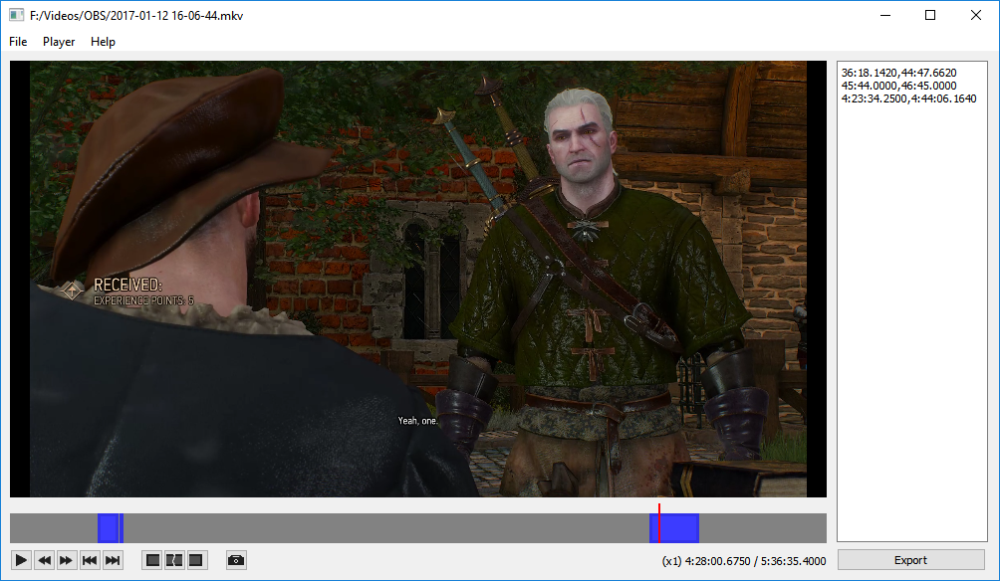

An application used to crop videos on keyframes without transcoding to maintain quality and remux to mp4. Its similar to one of Avidemux's use cases, but supports exporting multiple intervals simultaneously and comes with more video playback features.
Because it only cuts on keyframes, the cuts are not exact. The exported file will (usually) be slightly larger than the specified range. Currently only supports Windows.
Download the zip file, unzip to a folder, and double click the executable. There is no installer at this time.
If the application is missing MSVCP140.dll, install the 64bit Visual C++ Redistributable for Visual Studio 2015.
To open a file, drag a video file or click on File->Open in the menubar.
Afterwards, you can edit the text field manually or use the Adjust Range buttons to update the ranges that will be exported (indicated by blue boxes), and click the export button. It can support almost any input format, but the export is only to mp4.
There are a few keybindings, but most of them only work if the text area on the right side does not have focus. Click outside of the text area to remove focus.
The application is not 100% complete and is missing the following:
A video is composed of a container containing several streams, where each stream is a video or audio track. The application replaces the container for a new one and copies a section of each stream. For most video codecs (notably h264) this segment is not exact, and will usually start before and end after the given range.
To understand why the cuts are not exact, look into interframe compression.
This application is a frontend for FFmpeg, and works under-the-hood by executing the following ffmpeg command for each export range:
ffmpeg -ss start -i input_file -avoid_negative_ts make_zero -t duration -map 0 -codec copy output_file